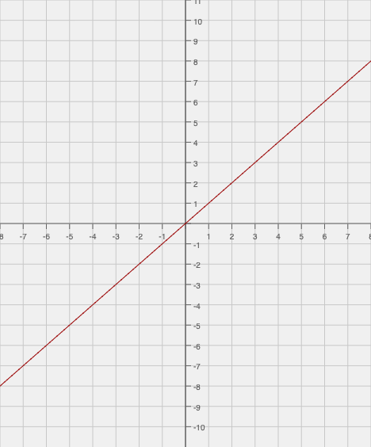
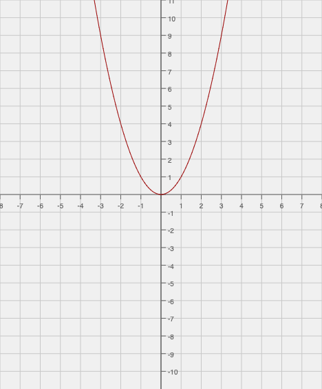
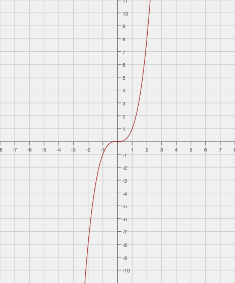

Understanding Derivatives & Integrals
Derivatives
To understand derivatives, you must first understand slope. This is the same slope that you worked with in algebra courses, likely in the line formula y = mx + b.
In this equation, m is the value of the slope. But in an exponential function, the slope isn't constant, so m becomes an equation rather than a number. Think of the basic exponential equation y = x².
As you move further in a horizontal direction, the vertical value increases exponentially. In other words, the slope of the function increases as you move in that horizontal direction. This is why the derivative of an exponential function results in another equation--the slope is not constant like it would be in a line. This is also why the derivative of a linear function will always result in a constant number; the slope is always the same throughout the line. In a similar fashion, the slope of a constant is always zero, so the derivative of a constant will always equal zero.
Integrals
Also known as antiderivatives since they are effectively the opposite of derivatives, integrals can be used to find the value contained between a function and the x-axis or to analyze limits of functions.
Think again of a simple parabolic function.
As you move from the left to the right, the value of the function fluctuates from positive to zero and back to positive again. The antiderivative of a function with a power of 2 is a function with a power of 3. So think of a graph of a cubic function.
Notice how the slope of the function starts out positive. In the middle of the function, the slope is zero, and then the slope becomes positive again. Remember that the function with a power of two had positive y values, then a y value of zero, then positive y values again! This is why integrals are also referred to as antiderivatives: we found the function whose slope equals the function we were given.